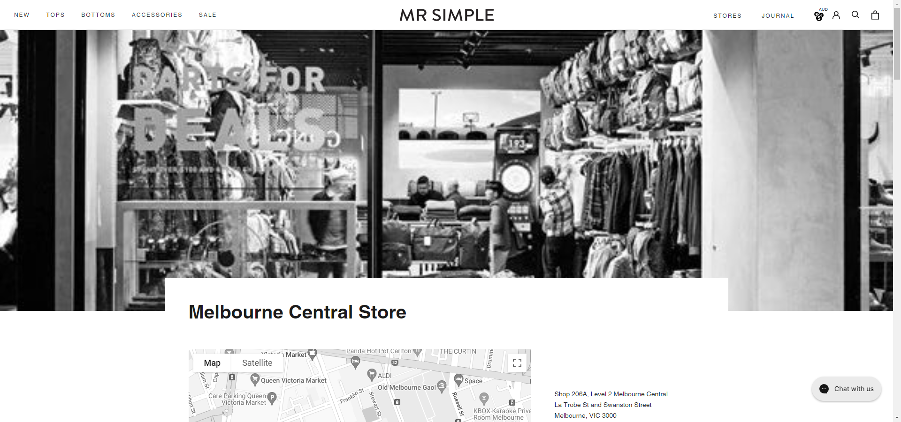

Project Details:
Personal Project in creating a clothing E-commerce website
Project Duration:
2 weeks
Project Objective / Goals
The objective was to create a believable E-Commerce clothing website.
Research:
For this personal project, I looked at some website designs on dribble and some actual life clothing websites to get inspiration on potential layouts. Mr. Simple's clothing website was used as the main design focus for this project.

My Role:
I designed the layout, content, and copywriting of the website.
Challenges:
There are some coding challenges concerning the navigation bar and its special effects. Furthermore, I was practicing in creatine CSS variables to facilitate reusable elements and styling.
My Takeaways
Setting up Coding rules Having a style guide is vital in maintaining the layout and design of the website accurately.
Conclusion / Result
Although the challenge was initially beyond my knowledge, I persevered and found solutions while gaining more project management knowledge and expanding my expertise in HTML, CSS, and Javascript.